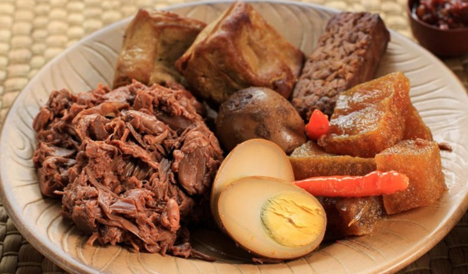
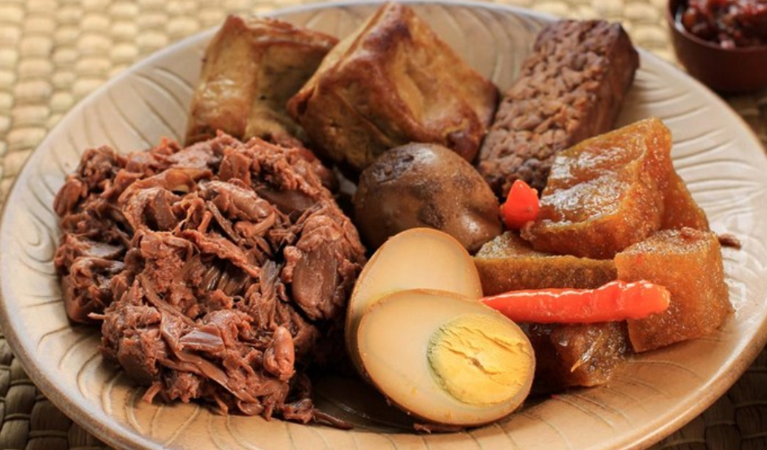
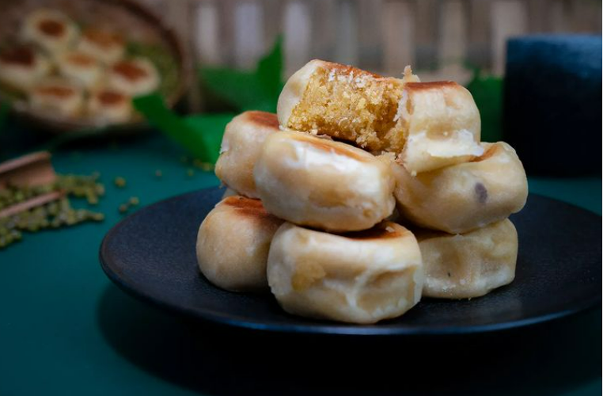

Gudeg
Gudeg adalah masakan tradisional Jogja yang terbuat dari nangka muda yang dimasak dengan santan dan rempah-rempah.
Gudeg adalah masakan tradisional Jogja yang terbuat dari nangka muda yang dimasak dengan santan dan rempah-rempah.
Bakpia adalah kue khas Jogja yang berisi kacang hijau atau berbagai macam isian lainnya.
